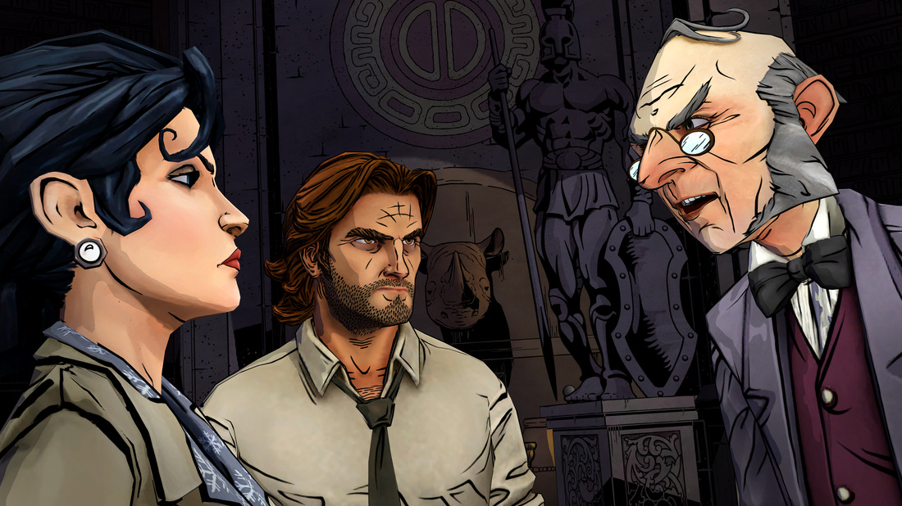
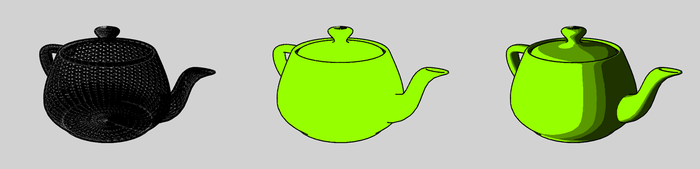

Cel Shading
Tristan Burke, Andrew Noglows, Shivam Parikh
Problem Description
The current renderer we've built in project 3-1 and 3-2 utilizes photo-realistic based rendering with no capabilites of artistic flexibility. In our project, we hope to widen these capabilities by implementing cel-shading, sometimes referred to as toon-shading. Cel shading is a stylized rendering technique that gives 3D objects a 2D or comic-like appearence. This technique is often paired with a black outline of objects to a greater artistic effect, a feature we also intend to implement. These additions will allow greater artistic influence on the rendered outlines of our pipeline.
Goals and Deliverales
- Basic Cel Shading:
- Customizable LUT Settings:
- Stylized highlights:
- Outlines: As discussed in the problem description, cel-shading is often used in hand with object outlines, completing the "comic book" appearence. As such, we will implement

Many Video games

Utah Teapot with Cel-Shading
Schedule
Our tentative schedule is as follows.
- April 9th - Submit the Proposal, Finish conducting the preliminary research to understand what our goals are.
- April 14th - Have an outline of technical goals and what we deem achievable for this final project.
- April 14th - Finalize the pipeline we will be using to write the algorithms, design the objects, render the images, and display our results.
- April 21st - Complete the outlining methods to draw back faces with thick lines using Sobel or Canny edge detection algorithms.
- April 28th - Finish the shading and texture for a comic/toon appearance using multi-texturing.
- April 30th - Have at least four renderings completed to display during the graded checkpoint.
- May 9th - Finish the writeup and display website, prepare for final presentations up until this point.
Recourses
Here are some of our resources:
- Project 3-2
- https://en.wikipedia.org/wiki/Cel_shading
- https://www.raywenderlich.com/146-unreal-engine-4-cel-shading-tutorial
- http://nehe.gamedev.net/tutorial/cel_shading/25001/
- http://www.lighthouse3d.com/tutorials/glsl-12-tutorial/toon-shading/
- https://www.cs.rpi.edu/~cutler/classes/advancedgraphics/S12/final_projects/hutchins_kim.pdf
- http://rbwhitaker.wikidot.com/toon-shader
- https://www.reddit.com/r/unrealengine/comments/7wgas1/creating_cel_shading_with_outlines/